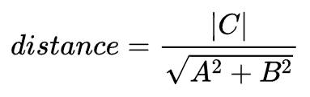
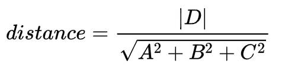
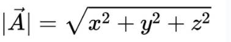
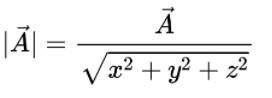
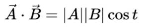
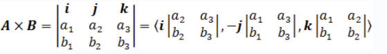

坐标系、点、线、面 —— 计算机几何 #
本节内容讨论的均是直角坐标系下的概念。
二维（Two Dimensional） #
二维坐标系中的相关概念。二维坐标系由 x 轴和 y 轴构成，x 和 y 互相垂直。二维坐标系构成了一个 xy 平面。
点（Points） #
二维点用 (x, y) 表示，x 表示点在 x 轴上的位置，y 表示点在 y 轴上的位置。
直线（Lines） #
xy 平面上的直线可以用以下方程式表示:
Ax + By + C = 0
B 不等于 0 时，方程可以转化为如下等式，k =-A/B, b=-C/B：
y = kx + b
其中 k 为直线的斜率（slope），b 为截距（intercept）。
坐标系原点到直线的距离公式：

平行直线与垂直直线 #
有如下两条直线：
Ax + By + C = 0
Ex + Fy + G = 0
如果两条直线平行则它们的斜率相同，如果 B 和 F 都非 0，即：
-A/B = -E/F
如果两条直线重合则它们的斜率和截距均相同，即：
-A/B = -E/F
-C/B = -G/F
如果两条直线垂直，则它们的斜率相乘等于 -1，即：
(A/B) * (E/F) = -1
三维（Three Dimensional） #
三维坐标系中的相关概念。三维坐标系可以看作由无数个二维坐标系堆叠而成，每个二维坐标系的 z 值不同。
点（Points） #
二维点用 (x, y, z) 表示，x 表示点在 x 轴上的位置，y 表示点在 y 轴上的位置，z 表示点在 y 轴上的位置。
平面（Plane） #
平面用以下方程式表示，有四个系数（coefficients）A、B、C、D。
Ax + By + Cz + D = 0
原点到平面的距离公式：

平面的法向量为 (A, B, C)。
向量（Vectors） #
计算机图形学中，向量与点的表达式类似, 二维空间的向量具有二个维度 (x, y)，三维空间中的向量具有三个维度 (x, y, z)。向量表示一个方向。
向量具有长度，向量的长度为：

长度为 0 的向量为零向量。
单位向量为长度为 1 的向量，你可以通过以下方式计算向量的单位向量：

在大学线性代数课程中，我们知道两个向量可以相加和相减，但是不能做乘法运算，但是向量可以乘以一个常数。虽然向量间不能做乘法运算，但是具有另外两个与乘法很像的运算：点积和叉积。
点积（Inner Product，Dot Product） #
点积公式：

向量的几何意义：
- 点积为 0，且两个向量 A 和 B 均为非 0 向量，则两个向量垂直。
- 点积为 1，且两个向量 A 和 B 均为非 0 向量，则两个向量平行，且方向相同。
- 点积为 -1，且两个向量 A 和 B 均为非 0 向量，则两个向量平行，且方向相反。
另外叉积可以用来求投影向量。
直线和线段的向量表示 #
可以用向量表示直线和线段。
直线使用一个基点和一个方向向量用于表示，基点表示直线上的一个点：[basePoint, directionVector]。
线段使用一个起始点和一个向量表示：
startPoint + t * direction
startPoint 为线段的起始点，direction 为线段方向的单位向量，t 为线段的长度，所以线段的终点为 startPoint + t * direction。
平面的向量表示 #
平面用平面上的一个点与平面的法向量表示，B 为平面上的一个点，n 为平面的法向量。对于平面上任意一个其他点 p，向量 p-B 都与 n 垂直。所以点积为 0。
(P - B)n = 0
叉积（Cross Product） #
向量的叉积公式：

向量的叉积为一个新的向量，该向量垂直于原始两个向量所构成的平面，方向由右手定则确定，新的向量的长度为两个向量构成的平行四边形的面积：
|A|*|B|*sin(t)
t 为两个向量的夹角。所以我们也可以用它求解三角形的面积。
（完）